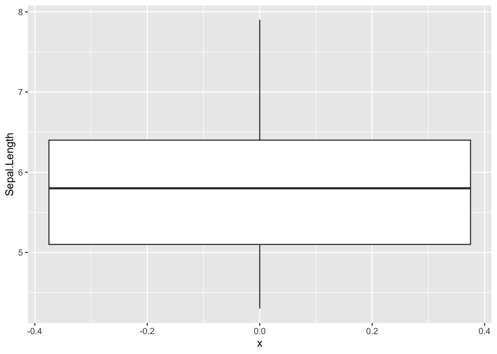
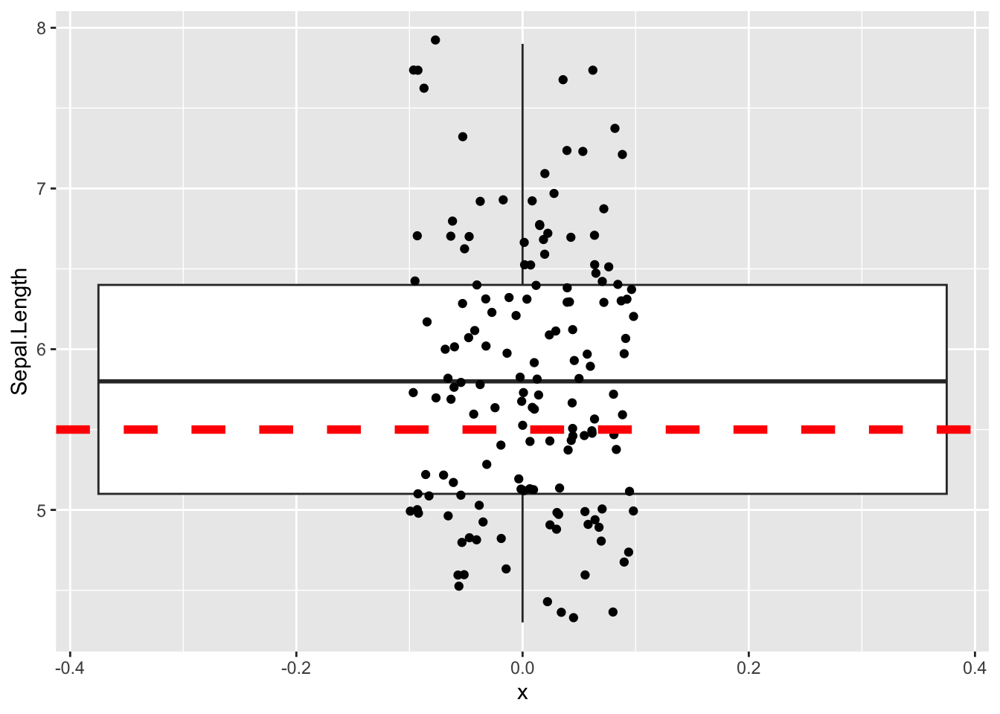
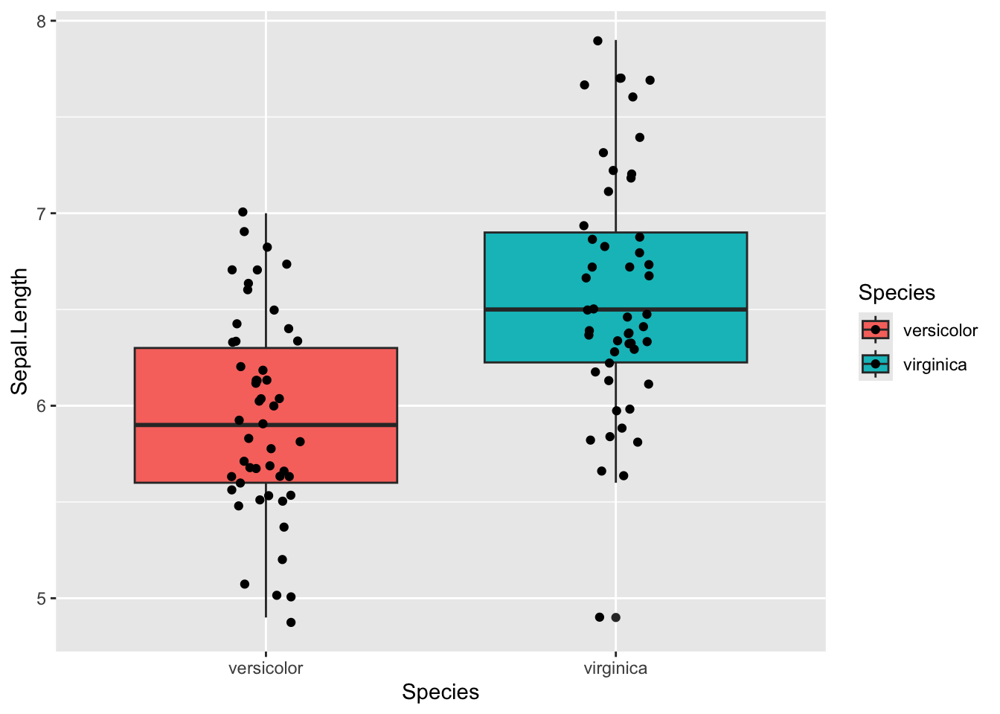

# install.packages("tidyverse")
# install.packages("viridis")
# install.packages("broom")Statistics in R
# load libraries
library(tidyverse)
library(viridis)
library(broom)Statistics in R
We’ve finally gotten to what R was meant for! Statistics!
T-test
One sample T-test
For testing the mean of some continuous data against a known mean.
ggplot(iris, aes(x =0 , y=Sepal.Length)) +
geom_boxplot()
iris$Sepal.Length [1] 5.1 4.9 4.7 4.6 5.0 5.4 4.6 5.0 4.4 4.9 5.4 4.8 4.8 4.3 5.8 5.7 5.4 5.1
[19] 5.7 5.1 5.4 5.1 4.6 5.1 4.8 5.0 5.0 5.2 5.2 4.7 4.8 5.4 5.2 5.5 4.9 5.0
[37] 5.5 4.9 4.4 5.1 5.0 4.5 4.4 5.0 5.1 4.8 5.1 4.6 5.3 5.0 7.0 6.4 6.9 5.5
[55] 6.5 5.7 6.3 4.9 6.6 5.2 5.0 5.9 6.0 6.1 5.6 6.7 5.6 5.8 6.2 5.6 5.9 6.1
[73] 6.3 6.1 6.4 6.6 6.8 6.7 6.0 5.7 5.5 5.5 5.8 6.0 5.4 6.0 6.7 6.3 5.6 5.5
[91] 5.5 6.1 5.8 5.0 5.6 5.7 5.7 6.2 5.1 5.7 6.3 5.8 7.1 6.3 6.5 7.6 4.9 7.3
[109] 6.7 7.2 6.5 6.4 6.8 5.7 5.8 6.4 6.5 7.7 7.7 6.0 6.9 5.6 7.7 6.3 6.7 7.2
[127] 6.2 6.1 6.4 7.2 7.4 7.9 6.4 6.3 6.1 7.7 6.3 6.4 6.0 6.9 6.7 6.9 5.8 6.8
[145] 6.7 6.7 6.3 6.5 6.2 5.9### significant result
t.test(iris$Sepal.Length, mu = 10)
One Sample t-test
data: iris$Sepal.Length
t = -61.479, df = 149, p-value < 2.2e-16
alternative hypothesis: true mean is not equal to 10
95 percent confidence interval:
5.709732 5.976934
sample estimates:
mean of x
5.843333 ### non-significant result
t.test(iris$Sepal.Length, mu = 5.8)
One Sample t-test
data: iris$Sepal.Length
t = 0.64092, df = 149, p-value = 0.5226
alternative hypothesis: true mean is not equal to 5.8
95 percent confidence interval:
5.709732 5.976934
sample estimates:
mean of x
5.843333 Lets vizualize what we are testing
ggplot(iris, aes(x=0 , y=Sepal.Length)) +
geom_boxplot() +
geom_jitter(width = 0.1) +
geom_hline(yintercept = 5.5, color='red', linewidth = 2, linetype = 'dashed')
Using broom functions to tidy up t.test()
t.test(iris$Sepal.Length, mu = 5)
One Sample t-test
data: iris$Sepal.Length
t = 12.473, df = 149, p-value < 2.2e-16
alternative hypothesis: true mean is not equal to 5
95 percent confidence interval:
5.709732 5.976934
sample estimates:
mean of x
5.843333 # tidy()
# Gets the result of the test
t.test(iris$Sepal.Length, mu = 5) %>% tidy()# A tibble: 1 × 8
estimate statistic p.value parameter conf.low conf.high method alternative
<dbl> <dbl> <dbl> <dbl> <dbl> <dbl> <chr> <chr>
1 5.84 12.5 6.67e-25 149 5.71 5.98 One Samp… two.sided # glance()
# Gets the model parameters; frequently some of the columns will be the same as
# the ones you get with tidy(). With t.test() tidy() and glance() actually
# return exactly the same results.
t.test(iris$Sepal.Length, mu = 5) %>% glance()# A tibble: 1 × 8
estimate statistic p.value parameter conf.low conf.high method alternative
<dbl> <dbl> <dbl> <dbl> <dbl> <dbl> <chr> <chr>
1 5.84 12.5 6.67e-25 149 5.71 5.98 One Samp… two.sided Two sample t-test
For testing the difference in means between two groups
unpaired
This is the standard t-test that you should use by default
# How to pipe into t.test
iris %>%
# filter out one species, because we can only test two groups
filter(Species != 'setosa') %>%
# Syntax is numeric variable ~ grouping variable
# Need to use . when piping; this tells t.test() that the table is being piped in
t.test(Sepal.Length ~ Species, data = .)
Welch Two Sample t-test
data: Sepal.Length by Species
t = -5.6292, df = 94.025, p-value = 1.866e-07
alternative hypothesis: true difference in means between group versicolor and group virginica is not equal to 0
95 percent confidence interval:
-0.8819731 -0.4220269
sample estimates:
mean in group versicolor mean in group virginica
5.936 6.588 ### with tidy()
iris %>%
filter(Species != 'setosa') %>%
t.test(Sepal.Length ~ Species, data = .) %>%
tidy()# A tibble: 1 × 10
estimate estimate1 estimate2 statistic p.value parameter conf.low conf.high
<dbl> <dbl> <dbl> <dbl> <dbl> <dbl> <dbl> <dbl>
1 -0.652 5.94 6.59 -5.63 1.87e-7 94.0 -0.882 -0.422
# ℹ 2 more variables: method <chr>, alternative <chr>Lets vizualize what we are testing
iris %>%
filter(Species != 'setosa') %>%
ggplot(aes(x = Species , y=Sepal.Length, fill = Species)) +
geom_boxplot() +
geom_jitter(width = 0.1)
what going under hood of R test
vector_1 <- iris %>%
filter(Species=="versicolor") %>%
select(Sepal.Length)
vector_2 <- iris %>%
filter(Species=="virginica") %>%
select(Sepal.Length)
vector_1 Sepal.Length
1 7.0
2 6.4
3 6.9
4 5.5
5 6.5
6 5.7
7 6.3
8 4.9
9 6.6
10 5.2
11 5.0
12 5.9
13 6.0
14 6.1
15 5.6
16 6.7
17 5.6
18 5.8
19 6.2
20 5.6
21 5.9
22 6.1
23 6.3
24 6.1
25 6.4
26 6.6
27 6.8
28 6.7
29 6.0
30 5.7
31 5.5
32 5.5
33 5.8
34 6.0
35 5.4
36 6.0
37 6.7
38 6.3
39 5.6
40 5.5
41 5.5
42 6.1
43 5.8
44 5.0
45 5.6
46 5.7
47 5.7
48 6.2
49 5.1
50 5.7vector_2 Sepal.Length
1 6.3
2 5.8
3 7.1
4 6.3
5 6.5
6 7.6
7 4.9
8 7.3
9 6.7
10 7.2
11 6.5
12 6.4
13 6.8
14 5.7
15 5.8
16 6.4
17 6.5
18 7.7
19 7.7
20 6.0
21 6.9
22 5.6
23 7.7
24 6.3
25 6.7
26 7.2
27 6.2
28 6.1
29 6.4
30 7.2
31 7.4
32 7.9
33 6.4
34 6.3
35 6.1
36 7.7
37 6.3
38 6.4
39 6.0
40 6.9
41 6.7
42 6.9
43 5.8
44 6.8
45 6.7
46 6.7
47 6.3
48 6.5
49 6.2
50 5.9t.test(vector_1, vector_2)
Welch Two Sample t-test
data: vector_1 and vector_2
t = -5.6292, df = 94.025, p-value = 1.866e-07
alternative hypothesis: true difference in means is not equal to 0
95 percent confidence interval:
-0.8819731 -0.4220269
sample estimates:
mean of x mean of y
5.936 6.588 even more underhood
# iris$Sepal.Length
#
# iris$Species == "versicolor"
#
# iris[iris$Species=="versicolor",]
iris[iris$Species=="versicolor",]$Sepal.Length [1] 7.0 6.4 6.9 5.5 6.5 5.7 6.3 4.9 6.6 5.2 5.0 5.9 6.0 6.1 5.6 6.7 5.6 5.8 6.2
[20] 5.6 5.9 6.1 6.3 6.1 6.4 6.6 6.8 6.7 6.0 5.7 5.5 5.5 5.8 6.0 5.4 6.0 6.7 6.3
[39] 5.6 5.5 5.5 6.1 5.8 5.0 5.6 5.7 5.7 6.2 5.1 5.7iris[iris$Species=="virginica",]$Sepal.Length [1] 6.3 5.8 7.1 6.3 6.5 7.6 4.9 7.3 6.7 7.2 6.5 6.4 6.8 5.7 5.8 6.4 6.5 7.7 7.7
[20] 6.0 6.9 5.6 7.7 6.3 6.7 7.2 6.2 6.1 6.4 7.2 7.4 7.9 6.4 6.3 6.1 7.7 6.3 6.4
[39] 6.0 6.9 6.7 6.9 5.8 6.8 6.7 6.7 6.3 6.5 6.2 5.9vector_1 <- iris[iris$Species=="versicolor",]$Sepal.Length
vector_2 <- iris[iris$Species=="virginica",]$Sepal.Length
vector_1 [1] 7.0 6.4 6.9 5.5 6.5 5.7 6.3 4.9 6.6 5.2 5.0 5.9 6.0 6.1 5.6 6.7 5.6 5.8 6.2
[20] 5.6 5.9 6.1 6.3 6.1 6.4 6.6 6.8 6.7 6.0 5.7 5.5 5.5 5.8 6.0 5.4 6.0 6.7 6.3
[39] 5.6 5.5 5.5 6.1 5.8 5.0 5.6 5.7 5.7 6.2 5.1 5.7vector_2 [1] 6.3 5.8 7.1 6.3 6.5 7.6 4.9 7.3 6.7 7.2 6.5 6.4 6.8 5.7 5.8 6.4 6.5 7.7 7.7
[20] 6.0 6.9 5.6 7.7 6.3 6.7 7.2 6.2 6.1 6.4 7.2 7.4 7.9 6.4 6.3 6.1 7.7 6.3 6.4
[39] 6.0 6.9 6.7 6.9 5.8 6.8 6.7 6.7 6.3 6.5 6.2 5.9t.test(vector_1, vector_2)
Welch Two Sample t-test
data: vector_1 and vector_2
t = -5.6292, df = 94.025, p-value = 1.866e-07
alternative hypothesis: true difference in means is not equal to 0
95 percent confidence interval:
-0.8819731 -0.4220269
sample estimates:
mean of x mean of y
5.936 6.588 Paired
You can use a paired t-test when a natural pairing exists between the data, for example individuals before and after treatment with some drugs, student test scores at the beginning of the year vs the end of the year, tumor and normal tissue samples from the same individual. The built-in sleep dataset gives the extra sleep time for a group of individuals treated with two different drugs. The columns contain:
- extra = numeric increase in hours of sleep
- group = drug given
- ID = patient ID
Let’s look at the sleep table first.
sleep %>%
ggplot(aes(x = group, y = extra, fill=group)) +
geom_boxplot() +
geom_point() #+
#geom_line(aes(group = ID))
sleep %>%
ggplot(aes(x = group, y = extra, colour = ID)) +
geom_point() +
geom_line(aes(group = ID))
To do a paired t-test, set the argument paired = T. Let’s compare doing a paired and an unpaired t-test on the same data. A paired t-test will always give you a more significant result.
## Paired t-test
## The sleep data is actually paired, so could have been in wide format:
sleep_wide <- pivot_wider(sleep, names_from = group, values_from = "extra") #%>%
sleep_wide <- sleep_wide %>%
rename(time_1 = "1",
time_2 = "2")# on long data()
t.test(data = sleep, extra ~ group)
Welch Two Sample t-test
data: extra by group
t = -1.8608, df = 17.776, p-value = 0.07939
alternative hypothesis: true difference in means between group 1 and group 2 is not equal to 0
95 percent confidence interval:
-3.3654832 0.2054832
sample estimates:
mean in group 1 mean in group 2
0.75 2.33 # wide data
t.test(sleep_wide$time_1, sleep_wide$time_2)
Welch Two Sample t-test
data: sleep_wide$time_1 and sleep_wide$time_2
t = -1.8608, df = 17.776, p-value = 0.07939
alternative hypothesis: true difference in means is not equal to 0
95 percent confidence interval:
-3.3654832 0.2054832
sample estimates:
mean of x mean of y
0.75 2.33 Traditional interface
# wide data
t.test(sleep_wide$time_1, sleep_wide$time_2, paired = TRUE)
Paired t-test
data: sleep_wide$time_1 and sleep_wide$time_2
t = -4.0621, df = 9, p-value = 0.002833
alternative hypothesis: true mean difference is not equal to 0
95 percent confidence interval:
-2.4598858 -0.7001142
sample estimates:
mean difference
-1.58 Formula interface
# wide data
t.test(Pair(time_1,time_2) ~ 1, data=sleep_wide)
Paired t-test
data: Pair(time_1, time_2)
t = -4.0621, df = 9, p-value = 0.002833
alternative hypothesis: true mean difference is not equal to 0
95 percent confidence interval:
-2.4598858 -0.7001142
sample estimates:
mean difference
-1.58